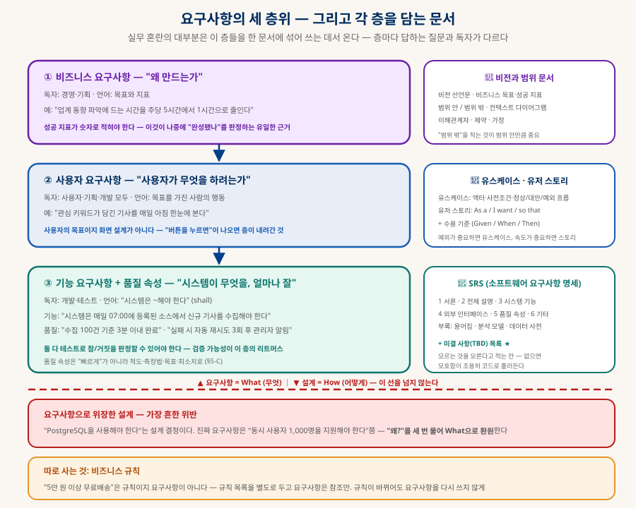
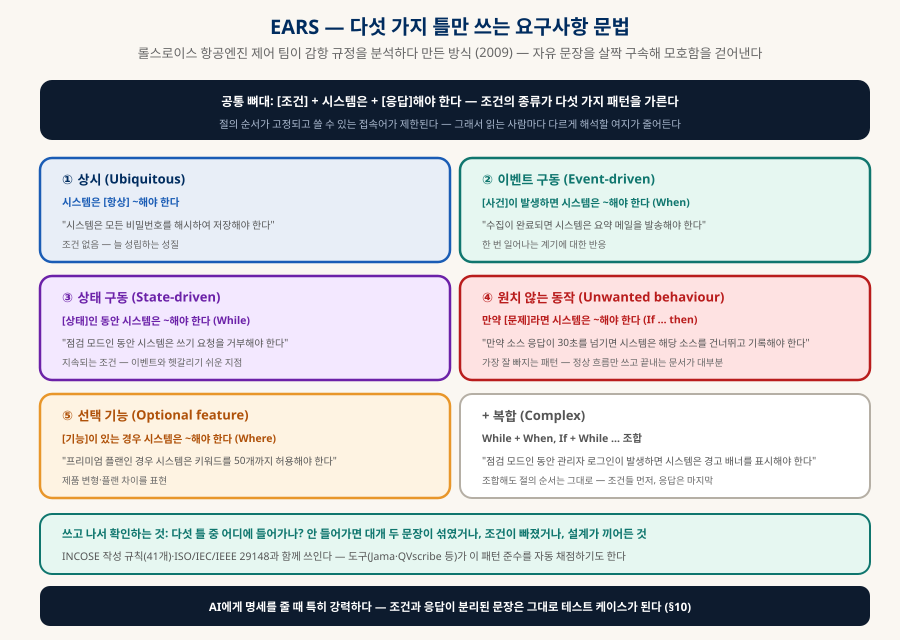
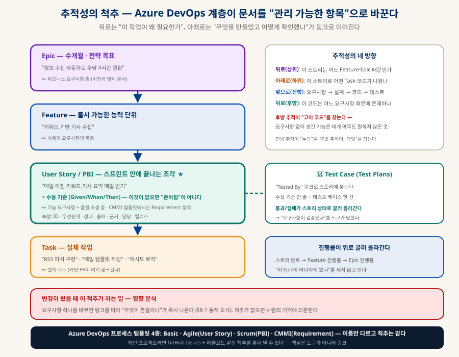
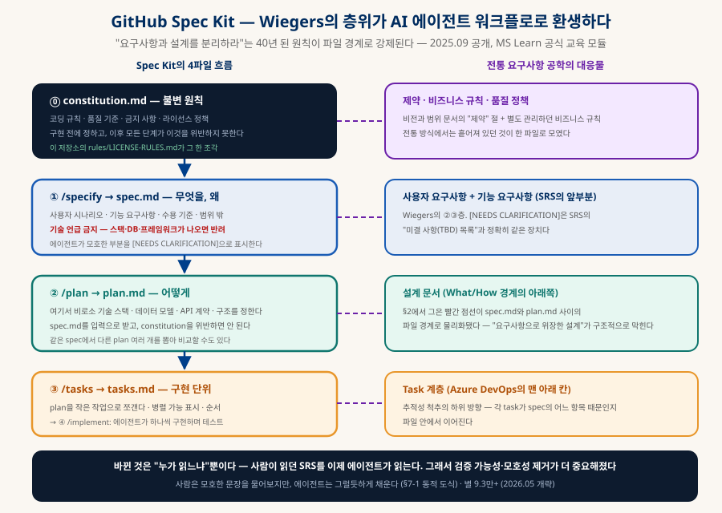

소프트웨어 요구사항 작성과 관리
"무엇을 만들지"를 검증 가능하게 적는 기술
코드가 싸질수록 "무엇을 만들지 정확히 적는 능력"이 병목이 된다. Karl Wiegers의 Software Requirements(Microsoft Press)를 뼈대로, 세 층위 분리 · 도출과 분석 모델 · EARS 문법 · 수용 기준 · 추적성 관리까지 정리하고, 이 40년 된 원칙이 GitHub Spec Kit이라는 AI 에이전트 워크플로로 환생한 2026년의 지형까지 잇는다.
0. 한눈에 보기 — 다섯 문장
이 문서 전체의 압축
섞으면 아무도 판단 못 한다 (§2)
이 선을 넘지 않는다 (§2)
요구사항이다 (§5·§7)
링크가 변경을 견디게 한다 (§8)
1. 왜 요구사항인가 — 결함은 발견이 늦을수록 비싸다
그리고 "다 아는데 왜 안 쓰나"의 답
소프트웨어 프로젝트 실패 원인 조사에서 수십 년째 상위를 지키는 항목이 "불완전한 요구사항", "사용자 참여 부족", "비현실적 기대"다. 공통점은 코드가 아니라 코드 이전에 있다는 것. 그리고 요구사항 단계의 결함은 발견이 늦을수록 수정 비용이 뛴다 — 요구사항 검토에서 잡으면 문장 하나를 고치지만, 출시 후에 잡으면 설계·코드·테스트·데이터·사용자 교육을 전부 되감는다.
| 결함이 발견된 시점 | 고쳐야 하는 것 | 비용 감각 (개략) |
|---|---|---|
| 요구사항 검토 | 문장 하나 | 1 |
| 설계 | 설계 문서 + 이미 합의된 인터페이스 | 수 배 |
| 구현 | 코드 + 단위 테스트 | 십 배 안팎 |
| 시스템 테스트 | 코드 + 통합 + 회귀 테스트 전체 | 수십 배 |
| 출시 후 | 위 전부 + 데이터 마이그레이션 + 사용자 재교육 + 신뢰 | 백 배 안팎 |
2. 세 층위와 문서 체계 — 실무 혼란의 90%를 없애는 구분
왜 · 무엇을 하려는가 · 시스템이 무엇을 얼마나 잘

| 층 | 답하는 질문 | 담는 문서 | 흔한 위반 |
|---|---|---|---|
| 비즈니스 요구사항 | 왜 만드는가 | 비전과 범위 문서 | 성공 지표가 숫자가 아님 → "완성됐나"를 영원히 판정 못 함 |
| 사용자 요구사항 | 사용자가 무엇을 하려는가 | 유스케이스 · 유저 스토리 | "버튼을 누르면 팝업이" — 목표가 아니라 화면 설계를 씀 |
| 기능 요구사항 | 시스템이 무엇을 해야 하는가 | SRS §3 | "PostgreSQL을 써야 한다" — 요구사항으로 위장한 설계 |
| 품질 속성 | 얼마나 잘 해야 하는가 | SRS §5 | "빠르게", "사용자 친화적" — 측정 불가 |
A비전과 범위 문서 — "왜"를 담는 그릇
SRS와 분리된 짧은 문서다. 비전 선언문, 비즈니스 목표와 성공 지표, 범위 안과 범위 밖, 컨텍스트 다이어그램(시스템과 외부 세계의 경계), 이해관계자, 제약, 가정. "범위 밖"을 적는 것이 범위 안만큼 중요하다 — 나중에 "이것도 당연히 되는 줄 알았는데"를 막는 유일한 장치다.
B따로 사는 것 — 비즈니스 규칙
"주문 5만 원 이상 무료배송", "관리자만 삭제 가능", "세율은 10%"는 요구사항이 아니라 비즈니스 규칙이다. 종류는 다섯 — 사실, 제약, 행동 촉발, 추론, 계산. 규칙 목록을 별도로 두고 요구사항은 "규칙 BR-12에 따라"로 참조만 한다. 그래야 세율이 바뀔 때 요구사항 문서를 다시 쓰지 않고, 같은 규칙이 여러 기능에서 다르게 구현되는 사고를 막는다.
3. 도출 — 사람에게서 꺼내기
"무엇이 필요하세요?"라고 묻지 말 것
요구사항은 "수집"되지 않는다 — 어디 놓여 있어서 주워 오는 게 아니라 사람의 머릿속·업무·불만에서 꺼내야 한다(도출, elicitation). 가장 중요한 원칙: 사용자는 해결책을 말하지 문제를 말하지 않는다. "엑셀 내보내기 버튼이 필요해요"는 해결책이고, 문제는 "매주 보고서를 손으로 옮겨 적느라 두 시간이 든다"다. 그래서 좋은 질문은 "무엇이 필요하세요?"가 아니라 "지금 어떻게 하고 계세요? 어디서 막히세요?"다.
| 기법 | 무엇을 얻나 | 주의 |
|---|---|---|
| 인터뷰 | 목표·불만·우선순위 | 사람은 자기가 실제로 하는 일과 다르게 설명한다 — 관찰로 교차 검증 |
| 현장 관찰 ★ | 말로 안 나오는 실제 절차·우회로·암묵지 | 가장 진실에 가깝다. "왜 그렇게 하세요?"를 현장에서 묻는다 |
| 워크숍 | 이해관계자 간 충돌을 그 자리에서 조정 | 진행자가 필요 — 목소리 큰 사람이 요구사항이 되지 않게 |
| 기존 문서 분석 | 업무 규정·양식·기존 시스템 화면·불만 접수 기록 | "현재 어떻게 되어 있나"의 가장 싼 출처 |
| 설문 | 다수의 선호·빈도 | "왜"는 못 얻는다 — 인터뷰의 대상 선정용으로 |
| 프로토타입 | "이런 건가요?" — 반응으로 요구사항을 끌어냄 | 완성품으로 오해받지 않게 기대 관리 (§7) |
| 브레인스토밍 | 선택지의 폭 | 평가는 나중에 — 발산과 수렴을 섞지 않는다 |
A누구에게서 꺼내나 — 이해관계자 분석
사용자만이 이해관계자가 아니다. 구매 결정자, 운영자, 고객 지원, 법무, 보안, 그리고 이 시스템 때문에 일이 바뀌는 사람. 권한(높/낮)과 관심(높/낮)의 2×2로 분류해 권한 높고 관심 높은 쪽은 긴밀히, 권한 높고 관심 낮은 쪽은 만족 상태 유지, 나머지는 정보 제공·관찰로 대응한다. 그리고 제품 챔피언 — 사용자 집단을 대표해 결정할 권한을 가진 한 사람. 이 사람이 없으면 모든 충돌이 개발자에게 떨어진다.
4. 분석 모델 — 그림으로 누락 찾기
각 모델은 특정 종류의 빈틈을 드러내는 렌즈다
글로 쓴 요구사항은 빈틈이 보이지 않는다. 그림으로 옮기면 "이 상태에서 저 이벤트가 오면?", "이 데이터는 어디서 오나?" 같은 질문이 저절로 생긴다. 전부 그릴 필요는 없다 — 프로젝트 성격에 맞는 두세 개면 충분하다.
| 모델 | 무엇을 그리나 | 어떤 누락을 드러내나 |
|---|---|---|
| 컨텍스트 다이어그램 | 시스템을 원 하나로, 외부 개체와 오가는 데이터 | 범위 — 무엇이 시스템 안이고 밖인가. 첫 그림으로 최적 |
| 데이터 흐름도 (DFD) | 처리·저장소·흐름 | 데이터가 어디서 와서 어디로 가나 — 출처 없는 데이터, 아무도 안 읽는 저장소 |
| ERD | 개체와 관계 | 데이터 구조의 모순 — 1:N인지 N:M인지 (「데이터베이스」·「온톨로지」) |
| 상태 전이도 | 상태와 전이 이벤트 | 빠진 전이 — "결제 중" 상태에서 취소가 오면? (「SaaS 해부」의 구독 상태 기계) |
| 스윔레인 활동도 | 역할별 줄에 절차를 배치 | 책임의 공백 — 이 단계는 누가 하나 |
| 결정표 · 결정 트리 | 조건 조합 × 결과 | 조합의 누락 — 조건 3개면 경우의 수 8, 문서에는 보통 3개만 있다 |
| 다이얼로그 맵 | 화면 간 이동 | 막다른 화면, 돌아갈 길 없는 흐름 |
| 피처 트리 | 기능의 계층 분해 | 범위의 크기 감각 — 한눈에 "이게 다인가" |
| 이벤트–응답 표 | 외부 이벤트 × 시스템 상태 × 응답 | 임베디드·실시간에서 핵심 (「기능안전과 워치독」의 타이밍 요구) |
A데이터 요구사항과 데이터 사전
3판에서 신설된 장이다. 기능만 적고 데이터를 안 적는 문서가 많은데, 실제 결함의 상당수는 "이 필드가 비어 있을 수 있나", "길이 제한이 있나", "날짜는 어느 시간대인가"에서 나온다. 데이터 사전은 각 항목의 정의·형식·허용 범위·기본값·출처를 표로 고정한다 — 「데이터베이스」 문서의 스키마 설계로 넘어가기 직전의 What이다.
5. 작성 — 문법 · EARS · 품질 속성의 정량화
읽는 사람마다 다르게 해석되지 않게
A좋은 요구사항의 특성 — 검증 가능성이 리트머스
| 특성 | 뜻 | 위반 예 → 수정 |
|---|---|---|
| 검증 가능 ★ | 테스트로 참/거짓 판정 가능 | "사용자 친화적" → "도움말 없이 3분 내 첫 수집 완료" |
| 명확 | 해석이 하나 | "적절히 처리" → "건너뛰고 오류 로그에 기록" |
| 완전 | 빠진 조건·예외 없음 | 정상 흐름만 → 실패·시간 초과·중복 케이스 추가 |
| 정확 | 사실과 일치 | 이해관계자 검토로 확인 |
| 실현 가능 | 기술·예산·일정 안 | 개발자가 도출 단계에 참여 |
| 필요 | 진짜 필요 | 출처(누가 왜)를 적을 수 없으면 삭제 후보 |
| 우선순위 | 버릴 순서가 있음 | 전부 "필수" → MoSCoW 강제 배분 (§6-C) |
| 추적 가능 | 고유 ID·출처·연결 | ID 없는 문단 → REQ-042 형식 + 링크 |
B문법 — shall · 한 문장 한 요구사항 · EARS
전통 문법: shall(해야 한다)은 필수, should는 권장, may는 허용 — 이 셋을 섞어 쓰지 않는다. 한 문장에 요구사항 하나, 능동태, 부정문 회피("~하지 않아야 한다"는 검증이 어렵다), 고유 ID. 그리고 여기에 EARS가 있다 — 자유 문장을 다섯 가지 틀로 살짝 구속해 모호함을 걷어내는 문법이다.

표준 쪽은 IEEE 830이 은퇴하고 ISO/IEC/IEEE 29148이 현행이다(유저 스토리도 명시적으로 허용). INCOSE의 작성 규칙 41개가 실무 체크리스트로 쓰이며, Jama·QVscribe 같은 도구는 EARS 패턴과 INCOSE 규칙 준수를 작성 중에 자동 채점한다 — 「LLM-as-a-Judge」의 채점을 요구사항 문장에 적용한 셈이다.
C품질 속성 — "빠르게"를 숫자로
품질 속성(비기능 요구사항)은 가장 모호하게 적히는 층이다. 처방은 속성마다 척도 · 측정 방법 · 목표치 · 최소 허용치 네 칸을 채우는 것(Tom Gilb의 Planguage 방식):
| 속성 | 척도 · 측정법 | 목표 | 최소 허용 |
|---|---|---|---|
| 성능 | 첫 화면 표시 시간 · 3G 에뮬레이션, 상위 95% | 2초 | 4초 |
| 가용성 | 월간 가동률 · 모니터링 로그 | 99.9% | 99.5% |
| 사용성 | 첫 수집 완료까지 시간 · 신규 사용자 5명 관찰 | 3분 | 10분 |
| 보안 | OWASP Top 10 자동 스캔 통과 항목 수 | 10/10 | 고위험 0건 |
| 유지보수성 | 신규 소스 추가에 드는 변경 파일 수 | 1개 | 3개 |
6. 유스케이스 · 유저 스토리 · 수용 기준 · 우선순위
사용자 층을 적는 두 가지 방식, 그리고 버릴 순서
| 유스케이스 | 유저 스토리 | |
|---|---|---|
| 형태 | 액터 · 사전조건 · 정상 흐름 · 대안 흐름 · 예외 흐름 · 사후조건 | As a [역할], I want [목표], so that [이유] + 수용 기준 |
| 성격 | 흐름의 명세 | 대화의 약속 — 상세는 대화와 수용 기준에서 |
| 강점 | 예외·대안 흐름을 강제로 생각하게 함 | 빠르고 가볍다 · 스프린트 단위 |
| 약점 | 무겁다 · 작성에 시간 | 예외가 빠지기 쉽다 · 스토리만 쌓이면 전체 그림이 사라진다 |
| 언제 | 예외 처리가 중요한 시스템(결제·안전·규제) | 속도가 중요한 제품 개발 · 대부분의 앱 |
A스토리는 요구사항이 아니다 — 수용 기준이 요구사항이다
"As a 마케터, I want 관심 키워드 기사를 매일 아침 받아보기를, so that 트렌드를 놓치지 않을 수 있다"는 무엇을 왜의 약속이다. 실제 명세는 수용 기준(Acceptance Criteria)에 들어간다:
Given 키워드가 3개 등록된 사용자가
When 매일 07:00 수집이 실행되면
Then 각 키워드당 최대 10건의 신규 기사가 이메일로 발송된다
And 같은 기사가 두 키워드에 걸리면 한 번만 포함된다
And 소스 응답이 30초를 넘기면 해당 소스를 건너뛰고 관리자에게 알린다Given/When/Then(Gherkin 문법)으로 쓰면 그대로 테스트 케이스가 된다 — BDD·ATDD가 이 흐름이고, §10에서 AI에게 "이 수용 기준으로 테스트를 먼저 써줘"라고 하는 근거다. EARS의 When/If-Then과 구조가 같다는 점도 눈여겨볼 것 — 조건과 응답의 분리라는 한 원리의 두 표기다.
B인수 조건의 실전 팁 — 예외부터 쓴다
정상 흐름은 누구나 쓴다. 가치는 예외에 있다 — "소스가 죽었을 때", "키워드가 0개일 때", "같은 기사가 두 번 올 때", "07:00에 서버가 재시작 중일 때". EARS의 If-Then 패턴이 "가장 잘 빠지는 패턴"인 이유와 같다. 결정표(§4)로 조건 조합을 세면 빠진 경우가 기계적으로 나온다.
C우선순위 — 버릴 순서를 정하는 네 가지 방법
| 방법 | 내용 | 언제 |
|---|---|---|
| MoSCoW | Must / Should / Could / Won't(이번엔) — 강제 배분. Must가 60%를 넘으면 배분이 안 된 것 | 가장 보편 · 첫 정렬 |
| Kano 모델 | 당연한 것(없으면 불만, 있어도 무감) · 일차원(많을수록 만족) · 매력(없어도 무감, 있으면 감동) | 제품 기획 — "당연한 것"은 아무도 요구사항으로 말해주지 않아 가장 잘 빠진다 |
| 100달러법 | 이해관계자에게 가상 100달러를 주고 항목에 배분 | 우선순위 갈등 조정 |
| 가치·비용·위험 매트릭스 | 각 항목의 상대 가치 ÷ (상대 비용 + 상대 위험)으로 정렬 (Wiegers 방식) | 항목이 수십 개 이상일 때 · 반정량 |
7. 검증 — "이게 맞나"를 코드 전에 확인하기
리뷰 · 테스트 도출 · 프로토타입
| 방법 | 내용 | 잡는 것 |
|---|---|---|
| 동료 검토 · 인스펙션 | 체크리스트(§5-A의 특성·금지어) 기반으로 여러 눈이 읽는다 — 형식적 인스펙션은 역할(진행·낭독·기록)을 나눈다 | 모호·누락·모순 — 가장 비용 효율이 높은 검증 |
| 테스트 케이스 도출 | 요구사항마다 "이걸 어떻게 확인하지?"를 써본다 — 못 쓰면 요구사항이 아니다 | 검증 불가능한 문장 |
| 프로토타입 | 버리는(throwaway) vs 진화형 · 수평(넓고 얕게, 화면 흐름) vs 수직(한 기능을 깊게) · 종이 프로토타입 | "내가 원한 게 이게 아닌데" — 보기 전엔 모르는 것 |
| 시뮬레이션 · 모델 검증 | 상태 전이도·결정표를 따라가 보기 | 조합·전이의 누락 |
7-1. 모호성 증폭 — 모호한 문장이 AI를 지나면 (동적)
사람 개발자는 모호한 요구사항을 만나면 물어본다. AI 에이전트는 그럴듯하게 채운다 — 그리고 채운 가정은 어디에도 기록되지 않는다. 같은 문장이 두 경로를 지나는 모습:
8. 관리 — 요구사항은 변한다, 몰래 변하지 않게
속성 · 베이스라인 · 변경 통제 · 추적성
Wiegers는 요구사항 활동을 개발(§3~7: 도출·분석·명세·검증)과 관리(이 절)로 나눈다. 관리의 전제는 하나 — 요구사항이 변하는 것은 정상이다. 문제는 변하는 것이 아니라 기록 없이 변하는 것.
| 장치 | 내용 |
|---|---|
| 요구사항 속성 | 항목마다 ID · 우선순위 · 상태(제안→승인→구현→검증→삭제) · 출처(누가 왜) · 근거 · 담당 · 목표 릴리스. Azure DevOps의 작업 항목 필드가 정확히 이것 |
| 베이스라인 | "이 버전이 합의된 것"을 고정 — 이후의 변경은 전부 변경 요청을 거친다. 베이스라인 없이는 "원래 그랬다"는 논쟁이 끝나지 않는다 |
| 변경 통제 | 변경 요청 → 영향 분석(무엇이 흔들리나, 비용·일정) → 승인/기각(변경 통제 위원회 또는 제품 챔피언) → 반영 → 관련자 통지 |
| 추적성 매트릭스 | 요구사항 ↔ 설계 ↔ 코드 ↔ 테스트의 연결표. 앞으로(누락 탐지)·뒤로(고아 코드 탐지)·위로(왜)·아래로(무엇이 나왔나) |
| 버전 관리 | 요구사항 문서도 git에 — 마크다운 SRS는 diff·blame·PR 리뷰가 그대로 된다. 이 저장소의 planning/ 폴더가 그 방식 |
| 변동성 지표 | 월간 변경 요청 수, TBD 잔여 수, 리뷰에서 발견된 결함 밀도 — 문서의 건강 상태를 숫자로 |

8-1. 변경 파급 — 요구사항 하나를 바꾸면 (동적)
"수집 시각을 07:00에서 사용자 지정으로 바꿔주세요"라는 변경 요청이 왔다. 추적성 척추가 있으면 링크를 따라 영향 범위가 즉시 나오고, 없으면 사람의 기억을 뒤진다:
9. 프로젝트 유형별 변주 — 같은 원칙, 다른 무게
3판 3부의 요지
| 프로젝트 유형 | 요구사항 활동에서 달라지는 것 |
|---|---|
| 애자일 | 문서 대신 백로그 + 스토리 + 수용 기준. 단, "문서를 안 쓴다"가 아니라 적시에 조금씩 쓴다. 비전과 범위·품질 속성·비즈니스 규칙은 여전히 앞에서 한 번 정리해야 한다 |
| 기존 시스템 개선·교체 | 가장 큰 함정: "지금 되는 건 다 돼야 한다"가 암묵 요구사항. 기존 시스템의 기능 목록을 먼저 뽑고(역공학), 버릴 것을 명시적으로 결정한다 |
| 패키지 도입 (COTS·SaaS) | 요구사항이 "만들 것"이 아니라 "고를 기준"이 된다 — 필수/선호를 가려 후보를 채점. 커스터마이징 범위를 미리 제한하지 않으면 패키지 도입의 이점이 사라진다 (「SaaS 해부」) |
| 아웃소싱 | 요구사항이 계약서다 — 모호함이 곧 분쟁. 수용 기준과 검수 절차를 계약에 넣는다. 대화로 보완할 여지가 적으니 문서 완성도가 가장 높아야 한다 |
| 업무 자동화 | 현재 업무 절차(As-Is)를 먼저 그리고 개선 절차(To-Be)를 그린다 — 스윔레인 활동도가 주 도구. "자동화 전에 절차부터 고쳐야 하는" 경우가 많다 |
| 임베디드 · 안전 관련 | 이벤트–응답 표·상태 전이도·타이밍 요구가 핵심. 안전 요구사항은 별도 등급(ASIL 등)과 추적성이 법규로 요구된다 (「기능안전과 워치독」) — 추적성 매트릭스가 선택이 아니라 감사 대상 |
10. AI 시대 — 명세가 실행 명세가 되다
GitHub Spec Kit · Azure DevOps + Copilot · 명세 엔지니어
코드가 싸질수록 병목은 "무엇을 만들지 정확히 적는 능력"으로 옮겨간다. 이 문서의 모든 원칙이 갑자기 실용적이 된 이유다 — 요구사항 문서를 읽는 독자가 사람에서 에이전트로 바뀌었고, 에이전트는 모호함을 묻지 않고 채운다(§7-1). 마이크로소프트·GitHub은 이 흐름을 Spec-Driven Development라 부르고 도구로 만들었다:

| Spec Kit 요소 | 하는 일 | 전통 대응물 |
|---|---|---|
| constitution.md | 구현 전에 정하는 불변 원칙 — 코딩 규칙·품질 기준·금지 사항·라이선스 정책. 이후 모든 산출물이 이를 위반하면 안 된다 | 제약 절 + 비즈니스 규칙 + 품질 정책 (이 저장소의 rules/LICENSE-RULES.md가 한 조각) |
| /specify → spec.md | 무엇을 왜. 사용자 시나리오·기능 요구사항·수용 기준·범위 밖. 기술 언급 금지. 모호한 곳은 [NEEDS CLARIFICATION] 표시 | 사용자·기능 요구사항 (SRS 앞부분) — [NEEDS CLARIFICATION] = TBD 목록 |
| /plan → plan.md | 여기서 비로소 스택·데이터 모델·API·구조. 같은 spec에서 plan 여러 개를 뽑아 비교 가능 | 설계 문서 — What/How 경계의 아래 |
| /tasks → tasks.md | 구현 단위로 분해, 순서·병렬 가능 표시 → /implement | Task 계층 (추적성의 맨 아래) |
AAzure DevOps + Copilot — 관리 쪽의 변화
Azure Boards의 Copilot이 스토리 초안과 수용 기준 초안을 생성하고, Test Plans와의 "Tested By" 링크로 요구사항↔테스트 추적성을 도구가 관리한다. 주의점은 §7-1과 같다 — AI가 쓴 수용 기준은 그럴듯하지만 도메인의 예외를 모른다. 초안으로 받고 예외(§6-B)를 사람이 덧붙이는 것이 실무 리듬이다. 개인 프로젝트라면 GitHub Issues + 라벨 + PR 링크로 같은 척추를 만들 수 있다 — 핵심은 도구가 아니라 링크가 있느냐다.
B바이브코딩에서 오늘 바로 쓰는 루프
- spec 먼저 — "무엇을 왜"를 기술 없이 적는다. 금지어(§5-A)가 보이면 숫자로 바꾼다.
- 수용 기준을 Given/When/Then으로 — 정상 1개, 예외 3개 이상.
- "이 수용 기준으로 테스트를 먼저 써줘" — 과녁이 선다.
- 그다음 구현을 시킨다 — 테스트가 통과할 때까지. 에이전트가 가정을 채울 틈이 줄어든다.
- 변경이 오면 spec부터 고친다 — 코드부터 고치면 spec이 거짓말이 된다(§8).
11. 흔한 실패와 처방
전부 실제로 반복되는 것들
| 실패 | 처방 |
|---|---|
| 층위를 섞어 씀 | §2의 세 층을 문서로 물리적 분리 — Spec Kit은 파일로 강제한다 |
| 요구사항으로 위장한 설계 | "왜?" 세 번 → What으로 환원. 진짜 제약은 제약 절에 |
| 검증 불가능한 표현 | 금지어 목록 + 척도·측정법·목표·최소치 네 칸 |
| 정상 흐름만 씀 | 예외부터 쓴다 · EARS If-Then · 결정표로 조합 세기 |
| 전부 "필수" | MoSCoW 강제 배분 — Must 60% 초과면 다시 |
| "당연한 것"이 빠짐 | Kano의 당연 품질을 별도 점검 — 아무도 말해주지 않는다 |
| 범위 슬금슬금 증식 | 베이스라인 + 변경 통제 + "범위 밖" 목록 |
| 문서를 쓰고 아무도 안 읽음 | 리뷰를 이벤트로 · 수용 기준을 테스트로 연결해 읽지 않으면 굴러가지 않게 |
| 코드부터 고치고 문서는 나중에 | spec이 거짓이 되는 순간 이후의 모든 AI 작업이 오염된다 — 변경은 spec부터 |
| AI가 채운 가정을 모름 | [NEEDS CLARIFICATION]을 강제 · 에이전트에게 "가정한 것을 목록으로 내라" |
12. 함께 읽기
이 문서에서 갈라지는 길들
| 주제 | 문서 |
|---|---|
| 의도 정의 → 과녁 → 구현의 루프 | 「AI 시대의 개발 프로세스」 §2·§4 — spec.md의 실전 형태 |
| 명세를 직무로 | 「AI 시대의 직무 지형」 — Spec Engineer · FDE |
| 수용 기준을 채점표로 | 「LLM-as-a-Judge」 — 심판의 기준이 곧 요구사항 |
| 모호함이 증폭되는 구조 | 「AI 오케스트레이션」 §5 — 오류의 복리 |
| 테스트가 게이트가 되는 곳 | 「CI/CD 정리」 — 수용 기준 → 자동 테스트 → 파이프라인 |
| 데이터 사전의 다음 단계 | 「데이터베이스」 · 「PostgreSQL 해부」 · 「온톨로지와 지식 그래프」(ERD·개념 모델) |
| 상태 기계·품질 속성의 실례 | 「SaaS 해부」(구독 상태 기계·멀티테넌시 요구) · 「앱 출시의 관문」(플랫폼 의무 = 외부 제약) |
| 안전 요구사항과 법정 추적성 | 「기능안전과 워치독」 — ASIL·타이밍 요구·감사 |
| 불변 원칙의 실물 | rules/LICENSE-RULES.md · 「오픈소스 라이선스와 바이브코딩」 — constitution의 한 조각 |